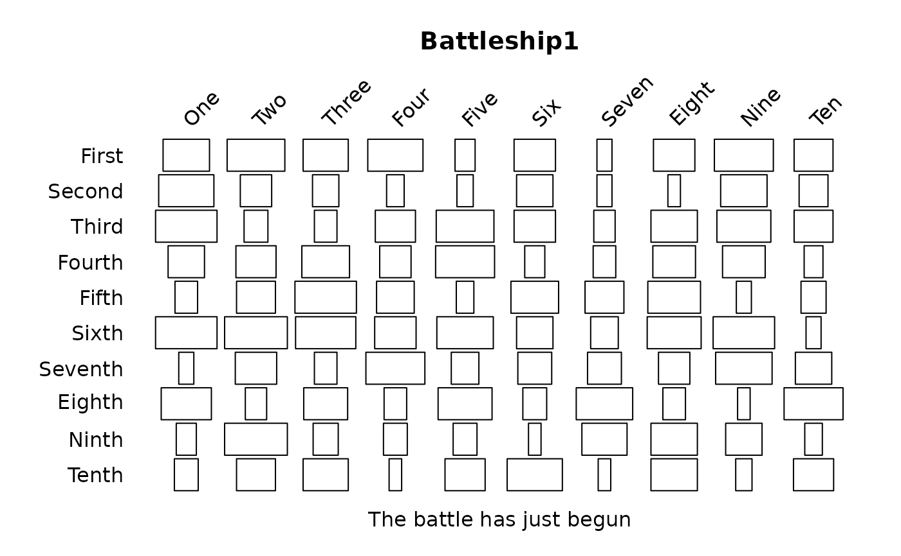

Display a matrix of values as the widths of stacked rectangles
battleship.plot.Rdbattleship.plot displays a matrix of rectangles, with widths proportional to the values in x. The values are scaled so that half the width of the largest rectangle is equal to maxxspan in user units. This prevents the rectangles from overlapping. The user can adjust the spacing of the stacks of rectangles by changing maxxspan. Similarly, maxyspan controls the spacing between rectangles in the vertical direction.
The labels for each stack of plots (the columns of x) are displayed at the top of the plot, angled at 45 degrees. The labels for each row of rectangles in the stacks (the rows of x) are displayed at the left. Long labels for either may require adjusting the mar argument.
The function will try to extract the labels xaxlab and yaxlab from the matrix column and row names respectively if none are passed.
Usage
battleship.plot(x,mar=c(2,5,5,1),col="white",border="black",
main="",xlab="",ylab="",xaxlab=NULL,yaxlab=NULL,cex.labels=1,
maxxspan=0.45,maxyspan=0.45)Arguments
- x
A matrix or data frame containing numeric values. See the example.
- mar
Margins for the plot.
- col
The fill colors for the rectangles.
- border
The border colors for the rectangles.
- main
The title for the plot (i.e. main).
- xlab,ylab
The x and y axis labels.
- xaxlab,yaxlab
Optional labels for the rows and columns.
- cex.labels
Character expansion for the row and column labels.
- maxxspan,maxyspan
Scaling factor for the widths and heights of the rectangles so that they don't overlap.
Examples
x<-matrix(sample(10:50,100,TRUE),10)
xaxlab=c("One","Two","Three","Four","Five","Six","Seven","Eight","Nine","Ten")
yaxlab=c("First","Second","Third","Fourth","Fifth","Sixth","Seventh",
"Eighth","Ninth","Tenth")
battleship.plot(x,xlab="The battle has just begun",main="Battleship1",
xaxlab=xaxlab,yaxlab=yaxlab)
